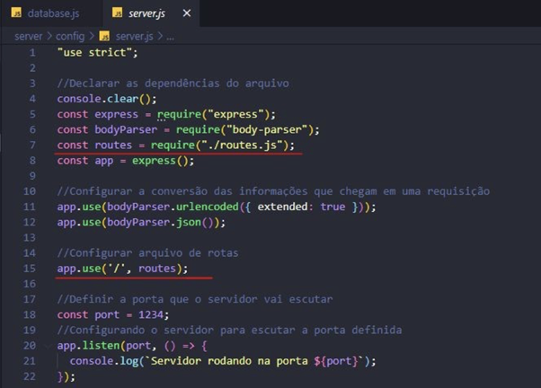
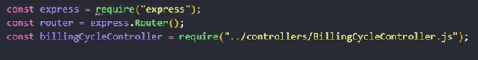
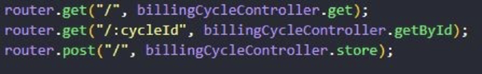
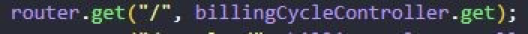
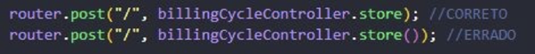
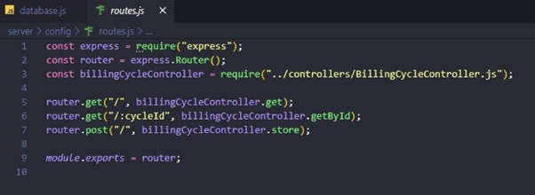

O QUE É O ARQUIVO DE ROTAS?
É o arquivo em que são configuradas as rotas para os métodos de requisição http.
Em aplicações mais complexas o ideal é criar um routes para cada tipo de informação.
Como estamos usando apenas o BillingCycle no momento todas as requisições passarão pelo routes.js.
CONFIGURAÇÃO
Dentro do server.js é necessário declarar a constante routes e declarar o app.use.
O ‘/’ na declaração significa que toda chamada irá passar pelo routes.

Dentro do routes.js é necessário chamar o express e dentro dele há um função Router().
É também necessário chamar o Controller pois é nele que estarão as funções.

Após essas declarações vêm as chamadas:

Na declaração dizemos:
- O método da requisição (post, get, put, delete, etc.);
- Os parâmetros via URL, informado com dois pontos e o nome do parâmetro (“/:id”);
- A função que será executada (que estará no controller).

Na função é importante não colocar (), pois isso garante que a função seja chamada apenas quando necessário.

Ao final declara-se o module.exports
Um exemplo do arquivo finalizado seria então:
